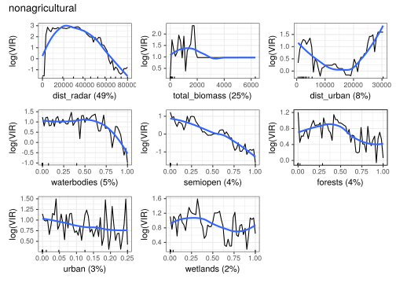
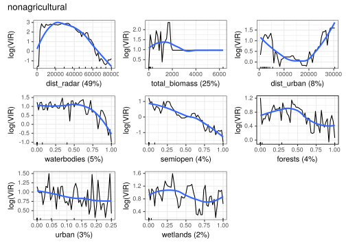

8 Modelling fireworks disturbance
We have so far:
- Pre-processed the radar data by removing clutter and applying the range-bias correction (Kranstauber et al. 2020).
- Annotated the PPIs with land use proportions and indicators of disturbance, i.e. distance to inhabited urban areas and (human) population density.
- Annotated the PPIs with the total biomass calculated from the Sovon counts.
With the dataset of annotated PPIs, we can start to explore the relation between fireworks disturbance and the birds measured aloft during NYE 2017-2018.
The following parameters we assume are important predictors for measured bird densities aloft:
- The total biomass of birds on the ground.
- The take-off habitat of these birds.
- The human population in the vicinity of birds.
- The distance to the nearest inhabited urban area.
8.1 Setting-up the environment
Load the required packages.
library(ggstatsplot)
library(ggplot2)
library(dplyr)
library(readr)
library(tidyr)
library(gbm)
library(dismo)
library(ggBRT)
library(patchwork)
library(pdp)
library(parallel)
cpucores <- 5In the previous chapter, we have created a dataset encompassing all the data contained within the individual PPIs. We will use this for further modelling.
8.2 Preparing a dataset for modelling
As we’re mostly interested in the moment of en masse take-off of birds, and we want to limit the effects of dispersal, we will limit our analysis to the first 5 minutes after 00:05 on January 1st, 2018 (or 23:05 on December 31st, 2017 in UTC), as both radar sites (Den Helder and Herwijnen) show a low VIR prior to and a rapid increase in VIR for that period (see Identifying moment of take-off). Making sure birds are thus still sufficiently ‘linked’ to the take-off sites requires that we limit our analysis to only this one scan.
Furthermore, we want to make sure that:
1. the area is ‘covered’ by at least 1 radar,
2. we have an estimate of total_biomassfor these sites,
3. the proportion of urban area (urban) in the PPI pixel is less than .25,
4. VIR is > 0 (otherwise log-conversion will return -Inf), so we replace 0-values with 1e-3.
dt_start <- as.POSIXct("2017-12-31 23:05:00", tz = "UTC")
dt_end <- as.POSIXct("2017-12-31 23:10:00", tz = "UTC")
mdl_variables <- c("VIR", "dist_radar", "datetime", "total_biomass", "urban", "agricultural", "semiopen", "forests", "wetlands", "waterbodies",
"dist_urban", "human_pop", "disturb_pot", "pixel")
log10_variables <- c("dist_urban", "human_pop", "total_biomass", "dist_urban", "disturb_pot")
data %>%
filter(coverage > 0,
datetime >= dt_start & datetime < dt_end,
total_biomass > 0,
dist_radar < 80000,
urban < 0.25) %>%
mutate(VIR = replace_na(VIR, 0.001),
VIR = log10(VIR),
disturb_pot = human_pop / dist_urban,
total_biomass = total_biomass / 1000) %>%
dplyr::select(all_of(mdl_variables)) %>%
filter_all(all_vars(is.finite(.))) %>%
identity() -> data_cleaned8.3 Check for correlations among predictors
We have to see if variables are strongly correlated and thus unfit for being included in the same model, so we calculate Spearman correlation coefficients for all numerical predictors. As this is ecological data, some degree of correlation is of course inevitable for most variables.
predictors <- mdl_variables[!mdl_variables %in% c("VIR", "datetime", "pixel", "x", "y")]
corr_radar <- ggcorrmat(data_cleaned, output = "plot", type = "spearman", cor.vars = all_of(predictors), colors = c("#2166AC", "#F7F7F7", "#B2182B"))
corr_radar
8.4 Determine the most suitable proxy for disturbance
As could be expected, the three ‘disturbance parameters’ (dist_urban, human_pop, disturb_pot) are highly correlated, so we should see which of these is most suitable to include in our model, as it makes no sense to include all. To assess that, we will simply compare the performance of each of the models trained with a single disturbance parameter.
lr <- 0.03
max_trees <- nrow(data_cleaned) * 0.25
silence <- FALSE
base_model <- c("dist_radar", "total_biomass", "urban", "agricultural", "semiopen", "forests", "wetlands", "waterbodies")
disturbance_proxies <- c("dist_urban", "human_pop", "disturb_pot")
x_vars <- lapply(disturbance_proxies, function(x) match(c(base_model,x), colnames(data_cleaned)))# disturbance_models <- mclapply(x_vars, function(x) gbm.step(data = data_cleaned, gbm.y = 1, gbm.x = x, bag.fraction = 0.75, family = "gaussian", tree.complexity = 2, learning.rate = lr, silent = silence, max.trees = max_trees, step.size = 50), mc.cores = cpucores)
disturbance_models <- lapply(x_vars, function(x) gbm.step(data = data_cleaned, gbm.y = 1, gbm.x = x, bag.fraction = 0.75, family = "gaussian", tree.complexity = 2, learning.rate = lr, silent = silence, max.trees = max_trees, step.size = 50, verbose = FALSE))
names(disturbance_models) <- disturbance_proxies
saveRDS(disturbance_models, file = "data/models/brt_models_disturbance.RDS")Let’s compare the performance:
disturbance_models <- readRDS("data/models/brt_models_disturbance.RDS")
ggPerformance("dist_urban" = disturbance_models[[1]], "human_pop" = disturbance_models[[2]], "disturb_pot" = disturbance_models[[3]])| dist_urban | human_pop | disturb_pot | |
|---|---|---|---|
| Total.Deviance | 7.0319551 | 7.0319551 | 7.0319551 |
| Residual.Deviance | 2.3667489 | 2.8488395 | 2.7367378 |
| Correlation | 0.8162388 | 0.7723324 | 0.7827168 |
| AUC | 0.0000000 | 0.0000000 | 0.0000000 |
| Per.Expl | 66.3429470 | 59.4872340 | 61.0814105 |
| cvDeviance | 3.0884135 | 3.1894147 | 3.1822746 |
| cvCorrelation | 0.7490918 | 0.7388797 | 0.7401407 |
| cvAUC | 0.0000000 | 0.0000000 | 0.0000000 |
| cvPer.Expl | 56.0803015 | 54.6439836 | 54.7455218 |
It turns out performance is more similar than dissimilar across these disturbance proxies, though results may vary due to the non-deterministic behaviour of gradient-boosted machines. So we will stick with the model containing a disturbance proxy that is least correlated with the other predictor variables.
corr_radar_df <- ggcorrmat(data_cleaned, output = "dataframe", type = "spearman", col.vars = all_of(predictors))
corr_radar_df %<>% filter(parameter1 %in% disturbance_proxies | parameter2 %in% disturbance_proxies)
swap_vars <- function(x, first_col) {
if (!x["parameter1"] %in% first_col) {
x_param1 <- x["parameter1"]
x_param2 <- x["parameter2"]
x["parameter1"] <- x_param2
x["parameter2"] <- x_param1
x
} else {
x
}
}
corr_radar_df[, c("parameter1", "parameter2")] <- t(apply(corr_radar_df[, c("parameter1", "parameter2")], 1, swap_vars, disturbance_proxies))
corr_radar_df %>%
filter(!parameter2 %in% c(disturbance_proxies, "VIR")) %>%
dplyr::rename(parameter = parameter1) %>%
group_by(parameter) %>%
summarise(sum_corr = sum(rho^2), .groups = "drop_last") %>% # Sum of squares to add 'punish' extra for high correlations
identity() -> sum_corr
least_correlated <- sum_corr[which.min(sum_corr$sum_corr), ]
sum_corr| sum_corr | .groups |
|---|---|
| 1.616829 | drop_last |
So, the ‘least correlated’ variable is and we will therefore continue using the model trained with this proxy for disturbance.
8.5 Determine best hyperparameter settings for lr
To avoid overfitting to noise, we will limit the maximum nr of trees used in the model to 25% of the number of datapoints, which yields a possible 2817 trees to be used. We still want to make sure our model reaches some measure of optimality (in this case a reduction of cross-validated deviance), we have to do a hyperparameter search for a suitable combination of maximum number of trees and learning rate. See Elith et al. for an explanation on the linkage between number of trees and learning rate.
# Parallelised hyperparameter search somehow seems to hang occasionally, so unfortunately we switch to serial processing
# hyperparms <- mclapply(learning_rates, function(x) { gbm.step(data = data_cleaned, gbm.y = 1, gbm.x = x_vars[[1]], bag.fraction = 0.5, family = "gaussian",
# tree.complexity = 2, learning.rate = x, max.trees = max_trees, step.size = 50) },
# mc.cores = 5, mc.preschedule = TRUE)
hyperparms <- lapply(learning_rates, function(x) { gbm.step(data = data_cleaned, gbm.y = 1, gbm.x = x_vars[[which.min(sum_corr$sum_corr)]], bag.fraction = 0.5,
family = "gaussian", plot.main = FALSE, tree.complexity = 2, learning.rate = x, max.trees = max_trees * 2,
step.size = 50, silent = TRUE)})
saveRDS(hyperparms, file = "data/models/brt_models_hyperparms.RDS")hyperparms <- readRDS(file = "data/models/brt_models_hyperparms.RDS")
max_used_trees <- max(unlist(lapply(hyperparms, function(x) {if (!is.null(x)) { max(x$trees.fitted) }})))
trees <- data.frame(trees = seq(from = 50, to = max_used_trees * 2, by = 50))
holdout_deviance <- lapply(hyperparms, function(x) { if (!is.null(x)) { x$cv.values }} )
missing <- which(unlist(lapply(holdout_deviance, is.null)))
h <- matrix(data = NA, nrow = dim(trees)[1], ncol = length(holdout_deviance))
for (i in seq_along(holdout_deviance)) {
h[1:length(holdout_deviance[[i]]), i] <- holdout_deviance[[i]]
}
h <- as.data.frame(h)
hp <- data.frame(trees, h)
colnames(hp) <- c(colnames(trees), learning_rates)
hp %>%
pivot_longer(cols = c(-trees), names_to = "lr", values_to = "holdout_deviance") %>%
identity() -> hp
ggplot(hp) +
geom_line(aes(x = trees, y = holdout_deviance, color = lr))## Warning: Removed 936 row(s) containing missing values (geom_path).
It seems a learning rate of 0.20 and a maximum number of trees of 2817 seems to perform best on this dataset. We can now retrain our most performant disturbance model with these new parameters.
8.6 Retraining the disturbance models using optimised learning rate and maximum number of trees
We can now retrain the models with the best combination of learning rate and maximum number of trees.
lr <- 0.2
max_trees <- nrow(data_cleaned) * 0.25
silence <- FALSE
base_model <- c("dist_radar", "total_biomass", "urban", "agricultural", "semiopen", "forests", "wetlands", "waterbodies")
disturbance_proxies <- c("dist_urban", "human_pop", "disturb_pot")
x_vars <- lapply(disturbance_proxies, function(x) match(c(base_model,x), colnames(data_cleaned)))
# disturbance_models <- mclapply(x_vars, function(x) gbm.step(data = data_cleaned, gbm.y = 1, gbm.x = x, bag.fraction = 0.75, family = "gaussian", tree.complexity = 2, learning.rate = lr, silent = silence, max.trees = max_trees, step.size = 50), mc.cores = cpucores)
disturbance_models <- lapply(x_vars, function(x) gbm.step(data = data_cleaned, gbm.y = 1, gbm.x = x, bag.fraction = 0.75, family = "gaussian", tree.complexity = 2, learning.rate = lr, silent = silence, max.trees = max_trees, step.size = 50, verbose = FALSE))
names(disturbance_models) <- disturbance_proxies
saveRDS(disturbance_models, file = "data/models/brt_models_disturbance.RDS")And once again we can compare the performance
disturbance_models <- readRDS("data/models/brt_models_disturbance.RDS")
ggPerformance("dist_urban" = disturbance_models[[1]], "human_pop" = disturbance_models[[2]], "disturb_pot" = disturbance_models[[3]])| dist_urban | human_pop | disturb_pot | |
|---|---|---|---|
| Total.Deviance | 7.0319551 | 7.0319551 | 7.0319551 |
| Residual.Deviance | 2.3667489 | 2.8488395 | 2.7367378 |
| Correlation | 0.8162388 | 0.7723324 | 0.7827168 |
| AUC | 0.0000000 | 0.0000000 | 0.0000000 |
| Per.Expl | 66.3429470 | 59.4872340 | 61.0814105 |
| cvDeviance | 3.0884135 | 3.1894147 | 3.1822746 |
| cvCorrelation | 0.7490918 | 0.7388797 | 0.7401407 |
| cvAUC | 0.0000000 | 0.0000000 | 0.0000000 |
| cvPer.Expl | 56.0803015 | 54.6439836 | 54.7455218 |
So the model with the disturbance proxy of `` continues to perform best and we’ll save it for future use.
8.7 Relative influence of variables
We can now also compare the relative influence of the variables used in this model.

| rel.inf | |
|---|---|
| agricultural | 56.4570685 |
| dist_radar | 25.1010968 |
| total_biomass | 11.0246923 |
| dist_urban | 3.1113062 |
| forests | 1.1231622 |
| semiopen | 1.0900101 |
| waterbodies | 0.8080390 |
| urban | 0.6423723 |
| wetlands | 0.6422525 |
The high relative importance of total_biomass (11%) suggests a clear link between birds counted on the ground (by Sovon’s observers) and what is measured aloft, exactly what one would expect if birds are still sufficiently ‘tied’ to their take-off habitat.
8.8 Models for seperate land uses
As the land use proportions are also somewhat correlated, and agricultural land use is by far the most common in The Netherlands, it may be a worthwhile exercise to model the effects of each land use proportion seperately. This way, we may discover effects that disappear because of the compound effects of correlation among the other predictors. Additionally, as agricultural is so (comparatively) strongly correlated with the other land use classes, we train a model with all land use classes except for agricultural.
lr <- 0.2
silence <- FALSE
base_model <- c("dist_radar", "total_biomass", least_correlated$parameter)
landscapes <- c("urban", "agricultural", "semiopen", "forests", "wetlands", "waterbodies")
x_vars <- lapply(landscapes, function(x) match(c(base_model,x), colnames(data_cleaned)))
all_x_vars <- unique(unlist(x_vars))
x_vars[[length(x_vars) + 1]] <- all_x_vars[!all_x_vars %in% match("agricultural", colnames(data_cleaned))]
# Parallelised model training - again - seems to hang occasionally, so unfortunately we switch to serial processing
# landscape_models <- mclapply(x_vars, function(x) gbm.step(data = data_cleaned, gbm.y = 1, gbm.x = x, bag.fraction = 0.75, family = "gaussian", tree.complexity = 2, learning.rate = lr, silent = silence), mc.cores = cpucores-1, mc.preschedule = TRUE)
landscape_models <- lapply(x_vars, function(x) gbm.step(data = data_cleaned, gbm.y = 1, gbm.x = x, bag.fraction = 0.75, family = "gaussian", tree.complexity = 2,
learning.rate = lr, silent = silence))
names(landscape_models) <- c(landscapes, "nonagricultural")
saveRDS(landscape_models, file = "data/models/brt_models_landscapes.RDS")And once again we compare the performance
landscape_models <- readRDS("data/models/brt_models_landscapes.RDS")
ggPerformance("urban" = landscape_models[[1]], "agricultural" = landscape_models[[2]], "semiopen" = landscape_models[[3]], "forests" = landscape_models[[4]],
"wetlands" = landscape_models[[5]], "waterbodies" = landscape_models[[6]], "nonagricultural" = landscape_models[[7]])| urban | agricultural | semiopen | forests | wetlands | waterbodies | nonagricultural | |
|---|---|---|---|---|---|---|---|
| Total.Deviance | 7.0319551 | 7.0319551 | 7.0319551 | 7.0319551 | 7.0319551 | 7.0319551 | 7.0319551 |
| Residual.Deviance | 1.6266843 | 2.3224084 | 1.6994135 | 1.7599157 | 1.7558358 | 1.6057816 | 1.6740604 |
| Correlation | 0.8789736 | 0.8206322 | 0.8728558 | 0.8680067 | 0.8683816 | 0.8805921 | 0.8749946 |
| AUC | 0.0000000 | 0.0000000 | 0.0000000 | 0.0000000 | 0.0000000 | 0.0000000 | 0.0000000 |
| Per.Expl | 76.8672549 | 66.9735038 | 75.8329873 | 74.9725972 | 75.0306166 | 77.1645071 | 76.1935280 |
| cvDeviance | 2.8920640 | 2.9986167 | 2.8260679 | 2.8946978 | 2.9030938 | 2.8211973 | 2.8180917 |
| cvCorrelation | 0.7682607 | 0.7576189 | 0.7735187 | 0.7675001 | 0.7662938 | 0.7747615 | 0.7743747 |
| cvAUC | 0.0000000 | 0.0000000 | 0.0000000 | 0.0000000 | 0.0000000 | 0.0000000 | 0.0000000 |
| cvPer.Expl | 58.8725470 | 57.3572829 | 59.8110653 | 58.8350928 | 58.7156947 | 59.8803291 | 59.9244924 |
With these models trained as well, we will save the final set of models.
8.9 Partial dependence
Partial dependence plots (PDP) can visualise the modelled marginal effect a feature has on the predicted output of a model. For exploratory purposes, we will create a quick visualisation of the PDPs for the trained model, before we start with a bootstrapping procedure to test the robustness of these results.
plot_pdp <- function(model, predictor) {
p <- partial(model, train = model$gbm.call$dataframe, pred.var = predictor, type = "regression", plot = TRUE, plot.engine ="ggplot2",
smooth = TRUE, rug = TRUE, n.trees = model$n.trees)
p
}
modelnames <- names(models)
i <- 1
for (model in models) {
relinf <- ggInfluence(model, plot = FALSE)
plots <- lapply(rownames(relinf), function(x) {
plot_pdp(model = model, predictor = x) +
xlab(paste(x, " (", round(relinf[x, 1]), "%)", sep = "")) +
ylab("log(VIR)")
})
print(wrap_plots(plots) + plot_annotation(title = modelnames[i]))
i <- i + 1
}


 

References
Kranstauber, Bart, Willem Bouten, Hidde Leijnse, Berend-Christiaan Wijers, Liesbeth Verlinden, Judy Shamoun-Baranes, and Adriaan M Dokter. 2020. “High-Resolution Spatial Distribution of Bird Movements Estimated from a Weather Radar Network.” Remote Sensing 12 (4). Multidisciplinary Digital Publishing Institute: 635. https://doi.org/10.3390/rs12040635.